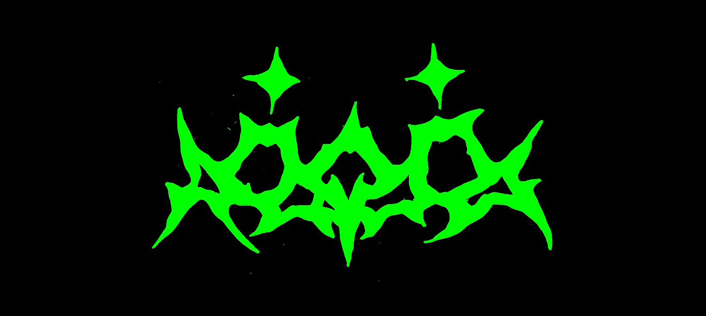

I work with all sorts of digital (and some analog) media, here's a collection of some highlighted projects.
Short movie - Motion Graphics
2026
Physical computing - wearable design
Graphic Design
Motion Graphics
Illustration
Reactive coding
2025
Short film
Animated Short film - Motion graphics
UI/UX Design
Graphic/Editorial Design
Illustration - Character Design
2024